自動給餌器
3Dプリンタとタミヤの遊星ギヤーボックスセットを利用して、水力で自動的に人工飼料を与える器具を製作した。
濾過器から出てくる水で水車を回し、ギア比800,000:1で減速することで回転板を約16日で1回転させ、概ね2日に1回の間隔で餌を投下する。
- 塩ビ管異形チーズで水流を分岐して水車を回す
- タミヤの遊星ギアユニットを連結改造してギア比40,000:1を実現する
- 自製ギア2種（ギア比4:1×5:1）にタミヤの遊星ギアユニット(ギア比40,000:1)を連結し、ギア比800,000:1を実現する
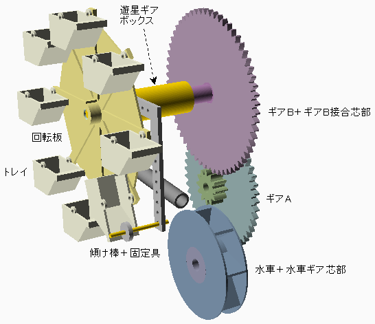
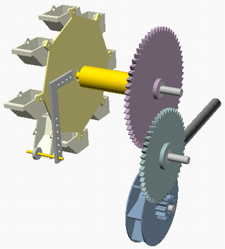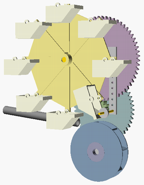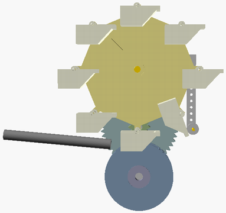
遊星ギアボックスを製作
タミヤ遊星ギヤーボックスセット
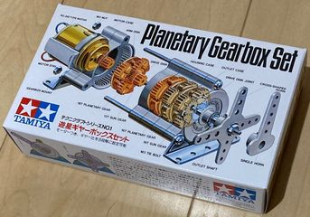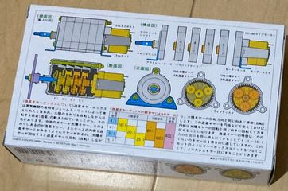
- ギア比5:1,5:1,4:1,4:1の計4個の遊星ギアユニットを組み合わせて使用することができる
- 4個の遊星ギアユニット全てを連結するとギア比400:1（5:1×5:1×4:1×4:1）となる
タミヤ遊星ギヤーボックスセット2個から、ギア比5:1,5:1,5:1,5:1,4:1,4:1,4:1の計7個の遊星ギアユニットを連結し、 ギア比40,000:1（5:1×5:1×5:1×5:1×4:1×4:1×4:1）とする
- 7個の遊星ギアユニットを連結するために、M3x75mmボルト3本が必要となる（付属ネジは長さが足らない）
付属のジョイントメタルを取り付ける
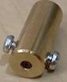
必要部品を3Dプリント
から3D-STLファイルをダウンロード
- 水車

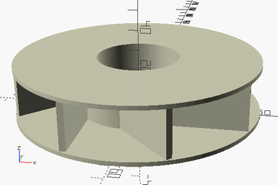 - 水車ギア芯部
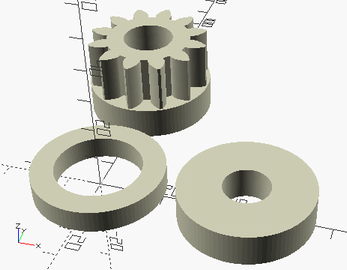 - ギアA
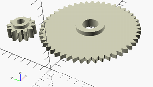 - ギアB
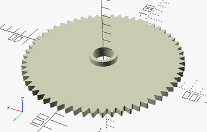 - ギアB接合芯部
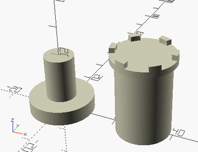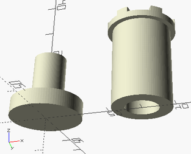
- 円周上に配置した凸部が遊星ギアボックスのギアユニットプレート凹部に嵌合する
- 回転板
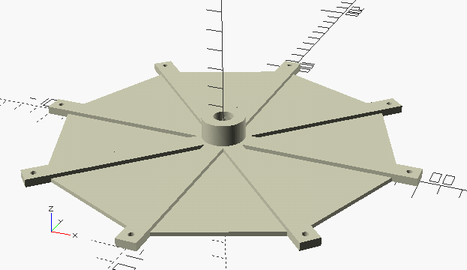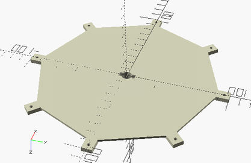
- 中央の穴が遊星ギアボックスのジョイントメタルに嵌合する
- トレイ
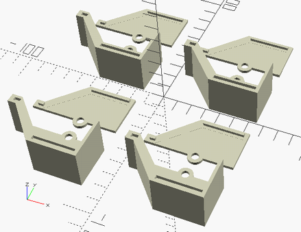 - 固定具
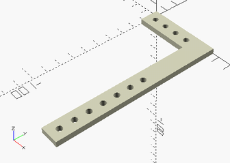
組み立て
3Dプリント部品を組み立て、回転部をプラスチックベアリングと長ナットでL型金具に取り付ける
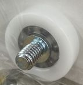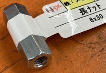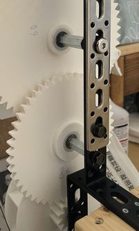
遊星ギアボックスを木材に取り付けてL型金具に固定して、全体を木材で製作した台に固定する（台はレンガの重みで安定させる）
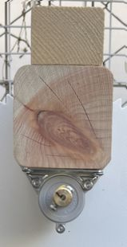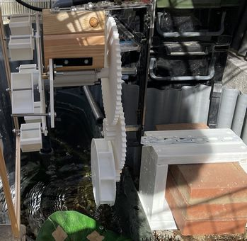
家に余っていた木材とプラ板を利用して、雨風を防ぐ囲いを製作して取り付けた
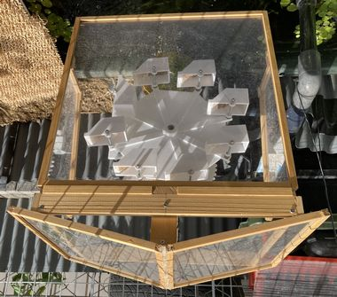
購入部品
| 名前 | 個数 |
|---|---|
| タミヤ遊星ギヤーボックスセット | 2 |
| 六角穴付きボルト M3x75mm | 3 |
| プラスチックベアリング（ネジ軸タイプ）PH-004、外径26高さ7、軸径6ピッチ1 | 1 |
| プラスチックベアリング（ネジ軸タイプ）PH-002、外径22高さ7、軸径6ピッチ1 | 2 |
| 長ナット6x30mm（M6ピッチ1） | 3 |
| ネジ3x50mm | 8 |
| ネジ4x60mm | 1 |
| ワッシャー3x8mm | 8 |
| 袋ナット3mm | 8 |
| L型型具 | 3 |
| 塩ビ管異形チーズ20/13 | 1 |
- その他の細かいネジ・ナット類は自宅にあった物を使用